같은 조합 34개를 4개 폭에서 비교한다. 캡처 커밋은 2.3.0 89573577f와 2.4.0 d72d78389다. Chromium과 macOS 폰트를 사용했고, 긴 페이지는 폭별 상한까지 담았다. 직접 판독한 폭에는 «직접 봄»을 표시했다.
S07 · agency-home
분류: a-violation · 320px에서 히어로 수치 3개가 2열에 놓여 마지막 줄 1칸(GRID_ORPHAN)
측정 조건(Q) · Q01@320 실패 → 통과 · Q01@390 통과 → 통과 · Q01@768 통과 → 통과 · Q01@1440 통과 → 통과 · Q10@320 통과 → 통과 · Q10@768 실패 → 통과 · Q10@1440 실패 → 통과
개선 · 320px: 히어로 수치 3개가 2+1에서 한 줄 3칸으로(Q01 통과). 수치와 다음 섹션 사이 간격이 줄었다(Q10 통과, 320px 130px). 문서 높이 4314→4250. 1440px도 수치 아래 간격이 눈에 띄게 줄었다(Q10 208→104px, 이 비교 페이지를 브라우저로 열어 확인).
남은 문제·새로 본 것 · 없음(이 표본에서 새로 본 것 없음).
320px · 문서 높이 4314→4250px · 프로브 지적 GRID_ORPHAN → 없음 · PNG 달라짐 · 직접 봄
before (2.3.0, 89573577f)
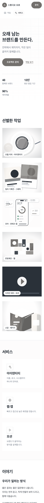
final (2.4.0, d72d78389)
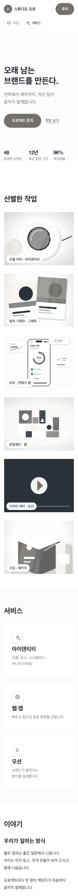
390px · 문서 높이 4561→4497px · 프로브 지적 없음 → 없음 · PNG 달라짐 · 육안 비교 안 함
before (2.3.0, 89573577f)
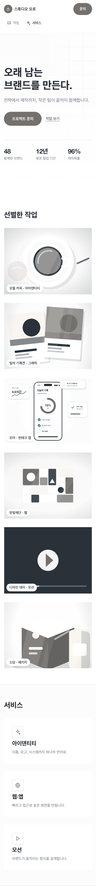
final (2.4.0, d72d78389)
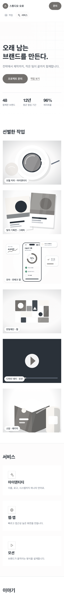
768px · 문서 높이 4229→4125px · 프로브 지적 없음 → 없음 · PNG 달라짐 · 육안 비교 안 함
before (2.3.0, 89573577f)
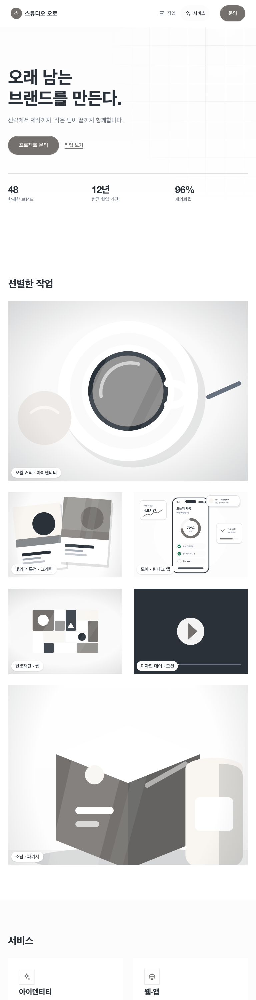
final (2.4.0, d72d78389)
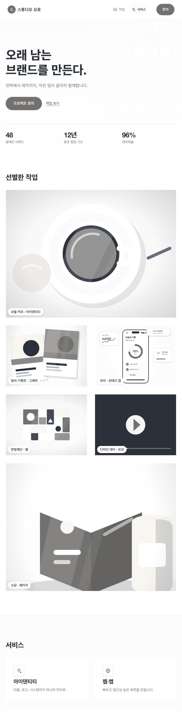
1440px · 문서 높이 3275→3171px · 프로브 지적 없음 → 없음 · PNG 달라짐 · 직접 봄
before (2.3.0, 89573577f)
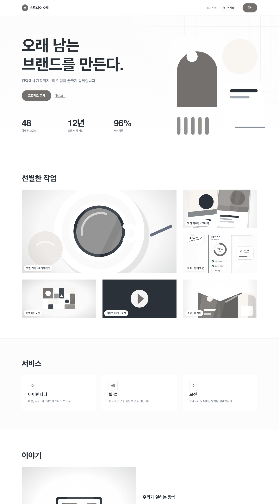
final (2.4.0, d72d78389)
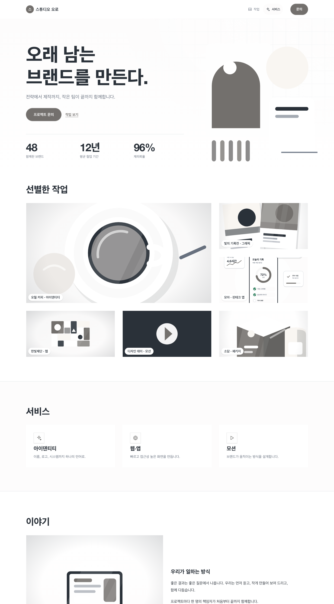
S05 · devtool-landing
분류: awkward · 규칙은 통과하나 히어로가 작고 오른쪽 절반이 비어 첫 화면 위계가 약함
측정 조건(Q) · Q06@1440 실패 → 통과
개선 · 1440px: 텍스트만 있는 split 히어로가 가운데 형태로 바뀌어 오른쪽 절반이 비는 모습은 없어졌다(Q06 0.50→0.29 통과).
남은 문제·새로 본 것 · 히어로 제목은 34px 그대로이고 제품 시각 요소도 없다. 첫 화면은 여전히 작은 제목 아래 빈 띠가 크다(보이는 대로). 제목 크기 대 섹션 제목 비(RC02 1.6)는 기본 조립에서 채워지지 않는다. Recipe 조립(`devtool-landing~hero:product`)만 64px·시각 요소를 갖는다.
320px · 문서 높이 4401→4401px · 프로브 지적 없음 → 없음 · PNG 달라짐 · 육안 비교 안 함
before (2.3.0, 89573577f)
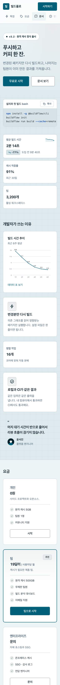
final (2.4.0, d72d78389)
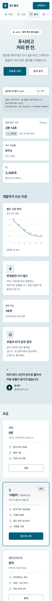
390px · 문서 높이 4293→4293px · 프로브 지적 없음 → 없음 · PNG 달라짐 · 육안 비교 안 함
before (2.3.0, 89573577f)
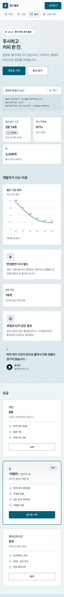
final (2.4.0, d72d78389)
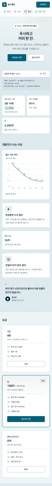
768px · 문서 높이 3429→3429px · 프로브 지적 없음 → 없음 · PNG 달라짐 · 육안 비교 안 함
before (2.3.0, 89573577f)
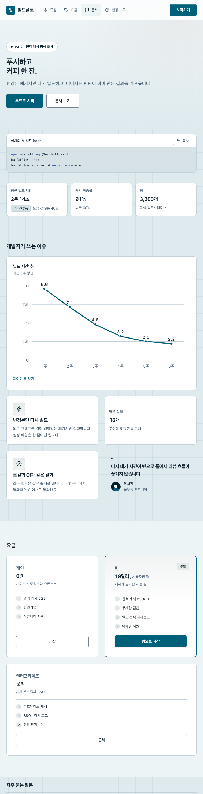
final (2.4.0, d72d78389)
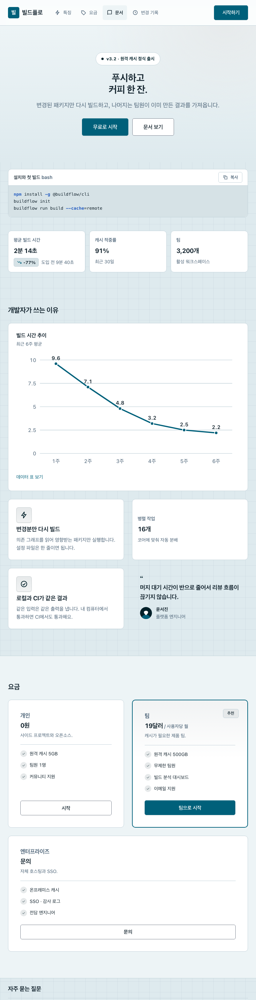
1440px · 문서 높이 2684→2618px · 프로브 지적 없음 → 없음 · PNG 달라짐 · 직접 봄
before (2.3.0, 89573577f)
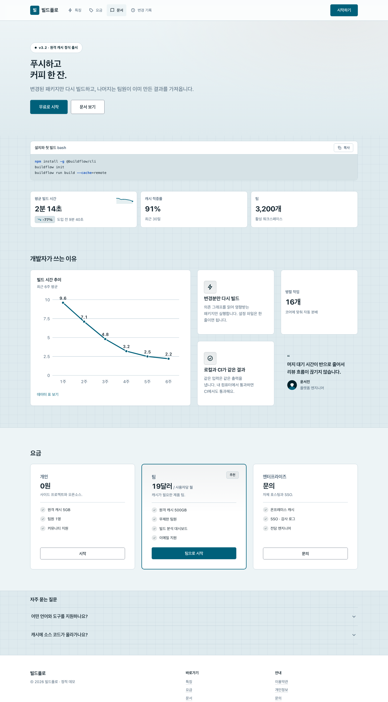
final (2.4.0, d72d78389)
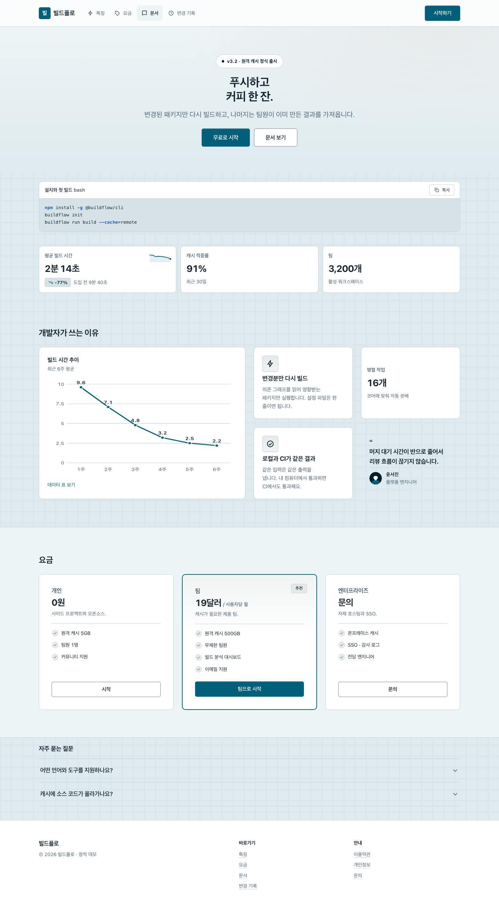
S06 · product-landing
분류: awkward · 규칙은 통과하나 벤토 칸의 높이가 맞지 않아 빈 면이 남고 히어로 제목이 작음
측정 조건(Q) · Q07@1440 실패 → 통과 · Q13@1440 통과 → 통과
개선 · 1440px: 벤토가 촘촘해졌다. 지표 칸 4개 빈 비율 0.69→0.53(Q07 통과). 히어로와 첫 섹션 사이 빈 띠가 줄어 문서 높이 3357→3012.
남은 문제·새로 본 것 · 벤토 큰 그림 칸이 362px 높이로 줄면서 램프 그림의 아래쪽(받침 타원)이 잘려 보인다(final에서 직접 확인, before에는 없던 모습). 그림 장면이 다른 장면으로 순환돼 램프 색이 갈색에서 분홍으로 바뀌었다(P01 순환의 결과). 이 잘림은 어떤 검사도 잡지 않는다.
320px · 문서 높이 3986→3938px · 프로브 지적 없음 → 없음 · PNG 달라짐 · 육안 비교 안 함
before (2.3.0, 89573577f)final (2.4.0, d72d78389)
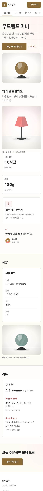
390px · 문서 높이 4105→4057px · 프로브 지적 없음 → 없음 · PNG 달라짐 · 육안 비교 안 함
before (2.3.0, 89573577f)
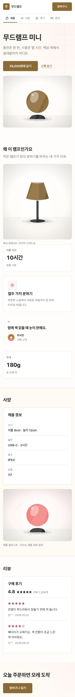
final (2.4.0, d72d78389)
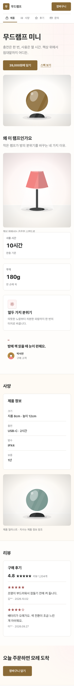
768px · 문서 높이 3600→3505px · 프로브 지적 없음 → 없음 · PNG 달라짐 · 육안 비교 안 함
before (2.3.0, 89573577f)
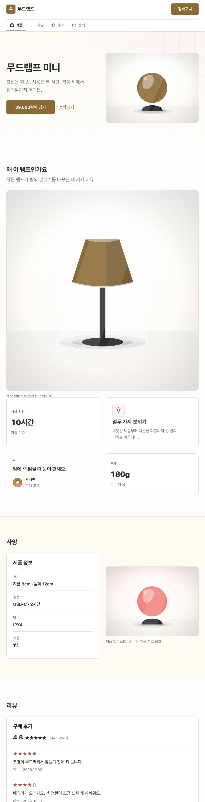
final (2.4.0, d72d78389)
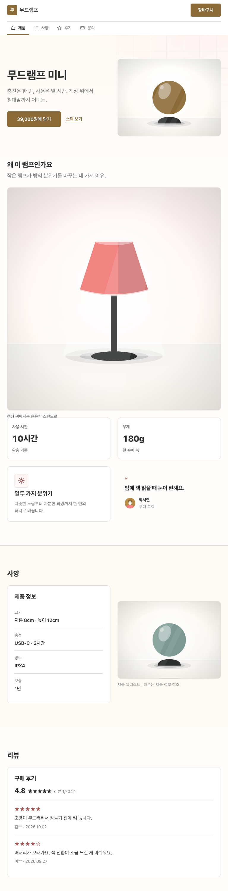
1440px · 문서 높이 3357→3012px · 프로브 지적 없음 → 없음 · PNG 달라짐 · 직접 봄
before (2.3.0, 89573577f)
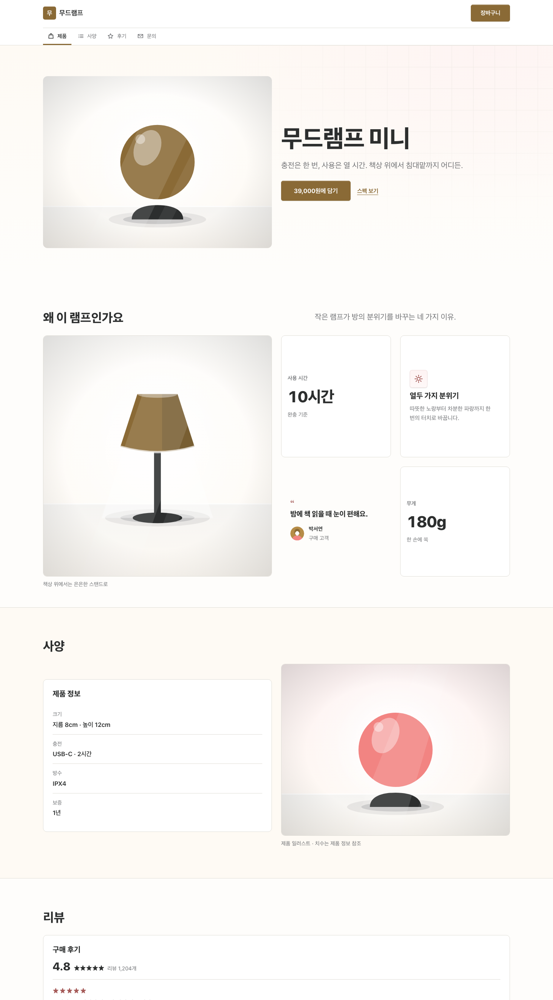
final (2.4.0, d72d78389)
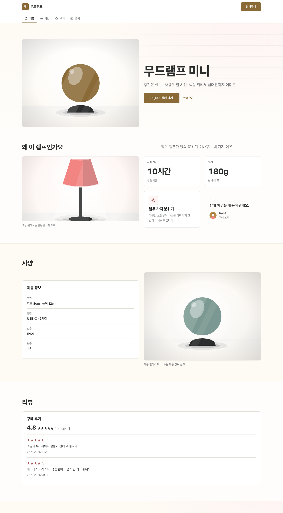
S27 · offline
분류: a-violation · 320px 상태 화면 제목이 3줄로 접힘(BIG_NARROW)
측정 조건(Q) · Q05@320 실패 → 통과 · Q05@390 통과 → 통과
개선 · 320px: 제목이 3줄에서 2줄로(33px→24.9px, Q05 통과).
남은 문제·새로 본 것 · 일러스트의 언덕 도형이 사각 상자에서 직선으로 잘리는 모습(진단 C6)은 그대로다. 고치지 않았다.
320px · 문서 높이 977→977px · 프로브 지적 BIG_NARROW → 없음 · PNG 달라짐 · 직접 봄
before (2.3.0, 89573577f)
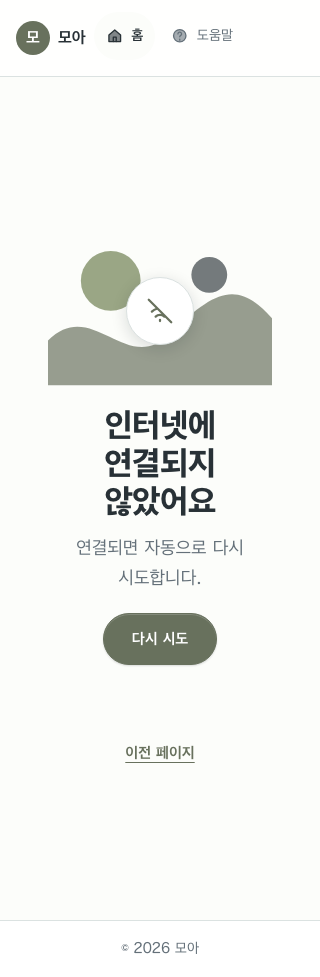
final (2.4.0, d72d78389)
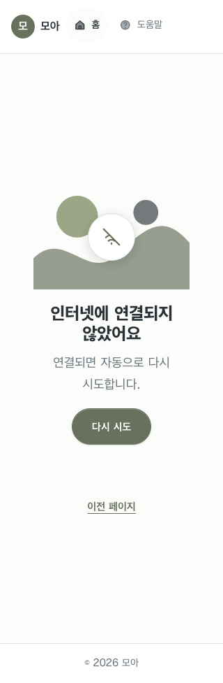
390px · 문서 높이 977→977px · 프로브 지적 없음 → 없음 · PNG 달라짐 · 육안 비교 안 함
before (2.3.0, 89573577f)
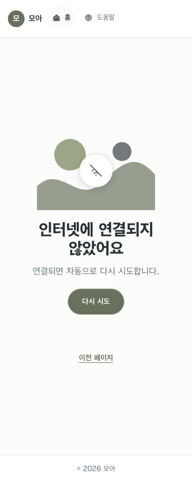
final (2.4.0, d72d78389)
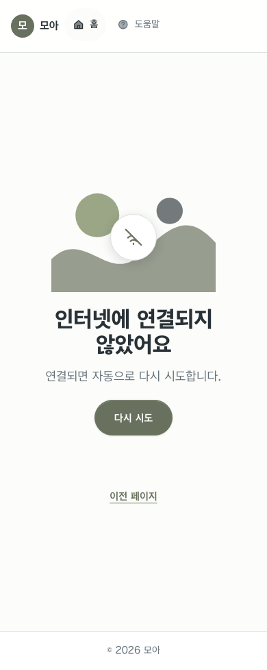
768px · 문서 높이 981→981px · 프로브 지적 없음 → 없음 · PNG 바이트 동일 · 육안 비교 안 함
before (2.3.0, 89573577f)
final (2.4.0, d72d78389)
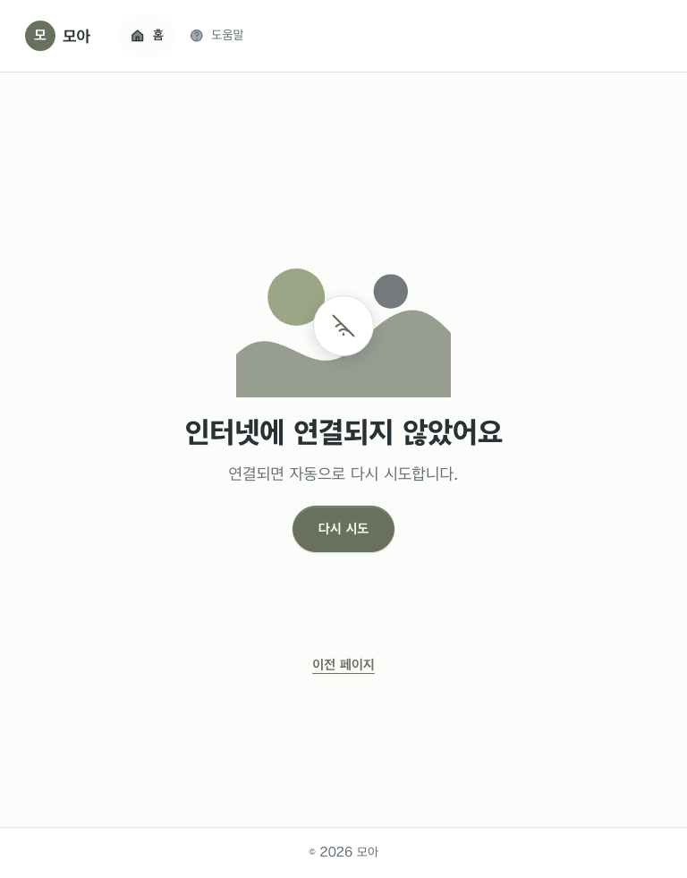
1440px · 문서 높이 981→981px · 프로브 지적 없음 → 없음 · PNG 바이트 동일 · 육안 비교 안 함
before (2.3.0, 89573577f)
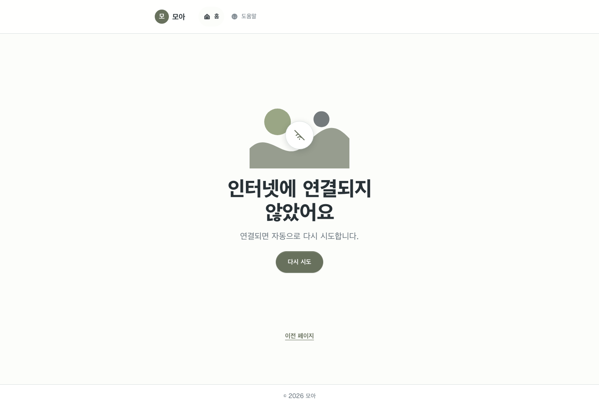
final (2.4.0, d72d78389)
S12 · sales-dashboard
분류: a-violation · 768px에서 차트 카드가 이웃 카드 높이로 늘어나 아래가 빔(EMPTY_CELL)
측정 조건(Q) · Q04@768 실패 → 통과 · Q04@1440 실패 → 통과
개선 · 768px: EMPTY_CELL 지적 해소, 도넛 링이 커짐. 1440px 카드 아래 빈 공간 210→77px(Q04 통과).
남은 문제·새로 본 것 · 768px에서 월별 매출 카드는 막대 차트가 작게(축 글자 약 7px) 가운데에 떠 있고 위아래가 크게 빈다(보이는 대로). Q04는 비율 조건(35%<38%)으로 통과한다. 읽기 어려운 작은 글자는 어떤 검사도 잡지 않는다.
320px · 문서 높이 2937→2937px · 프로브 지적 없음 → 없음 · PNG 바이트 동일 · 육안 비교 안 함
before (2.3.0, 89573577f)
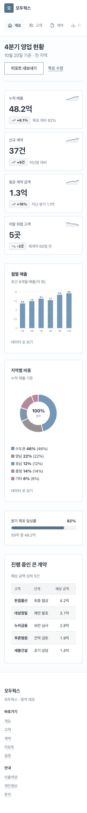
final (2.4.0, d72d78389)
390px · 문서 높이 2734→2734px · 프로브 지적 없음 → 없음 · PNG 바이트 동일 · 육안 비교 안 함
before (2.3.0, 89573577f)
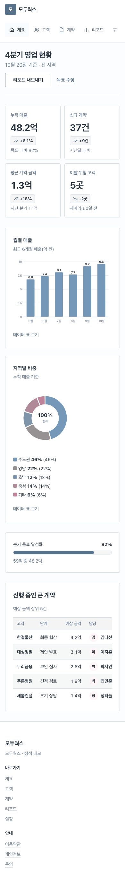
final (2.4.0, d72d78389)
768px · 문서 높이 1941→1941px · 프로브 지적 EMPTY_CELL → 없음 · PNG 달라짐 · 직접 봄
before (2.3.0, 89573577f)
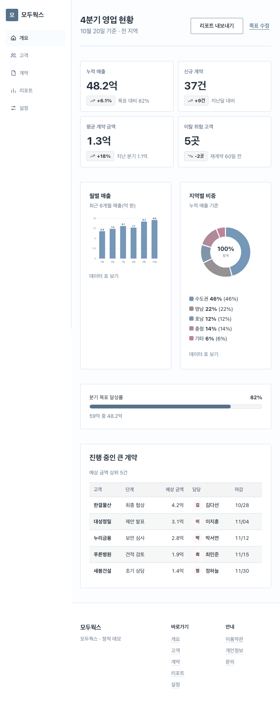
final (2.4.0, d72d78389)
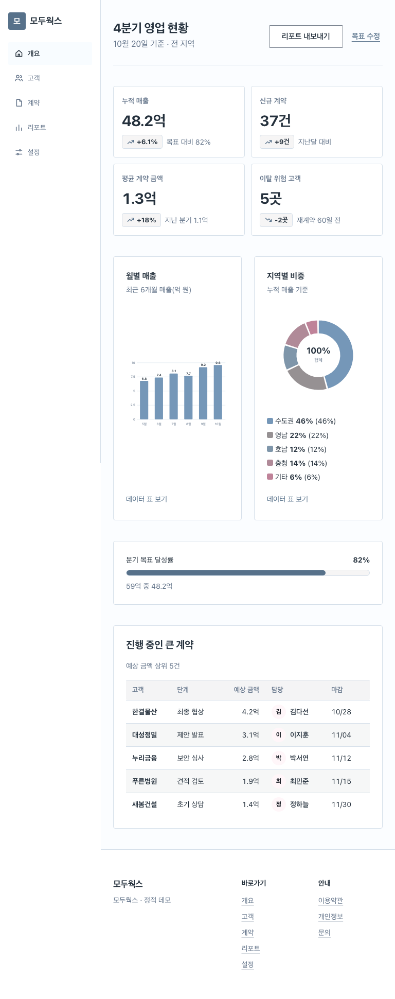
1440px · 문서 높이 1800→1800px · 프로브 지적 없음 → 없음 · PNG 달라짐 · 육안 비교 안 함
before (2.3.0, 89573577f)
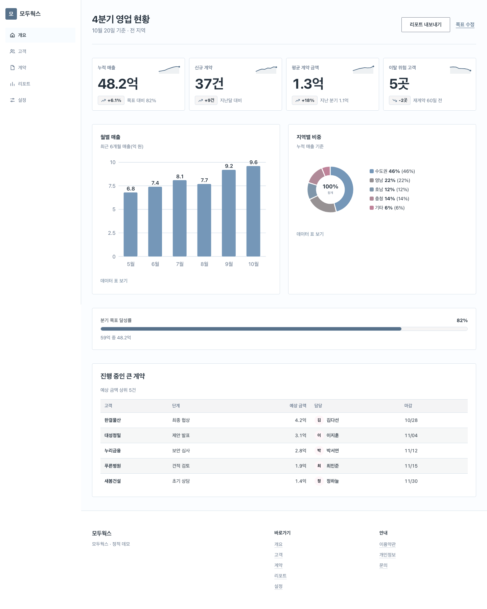
final (2.4.0, d72d78389)
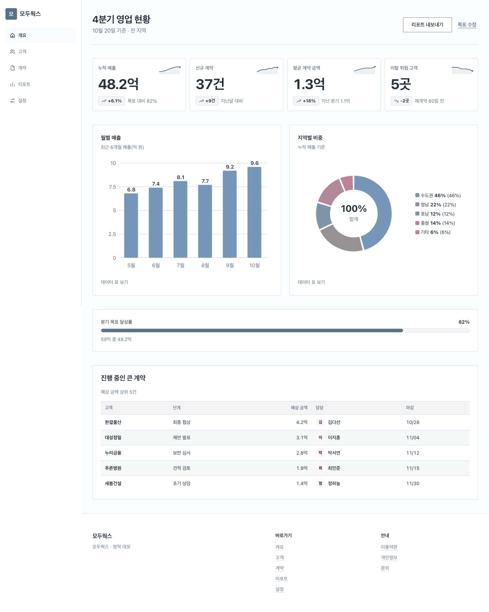
S23 · menu-dining
분류: a-violation · 320px 가격이 가장자리 밖(EDGE_VIEW), 768px 3개 2열 고아(GRID_ORPHAN)
측정 조건(Q) · Q02@320 실패 → 통과 · Q02@390 통과 → 통과 · Q03@768 실패 → 통과 · Q03@1440 통과 → 통과
개선 · 320px: 메뉴 줄이 가로로 넘치지 않는다(Q02 maxOverflow 36→0). 768px 사진 메뉴 2+1 해소(Q03 통과, 이 폭은 직접 보지 않음).
남은 문제·새로 본 것 · 320px에서 같은 목록 안의 가격 위치가 줄마다 다르다(어떤 줄은 이름 옆 점선 뒤, 어떤 줄은 아래 줄 오른쪽). 줄바꿈 결과이고 결함으로 단정하지 않으나 일관성은 떨어진다.
320px · 문서 높이 2722→2765px · 프로브 지적 EDGE_VIEW,EDGE → 없음 · PNG 달라짐 · 직접 봄
before (2.3.0, 89573577f)final (2.4.0, d72d78389)
390px · 문서 높이 2394→2396px · 프로브 지적 없음 → 없음 · PNG 달라짐 · 육안 비교 안 함
before (2.3.0, 89573577f)final (2.4.0, d72d78389)
768px · 문서 높이 2484→2081px · 프로브 지적 GRID_ORPHAN → 없음 · PNG 달라짐 · 육안 비교 안 함
before (2.3.0, 89573577f)
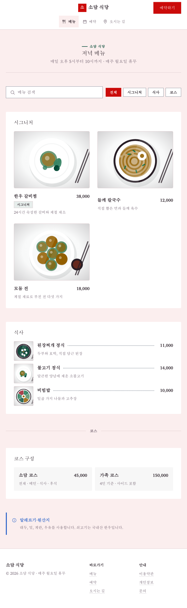
final (2.4.0, d72d78389)
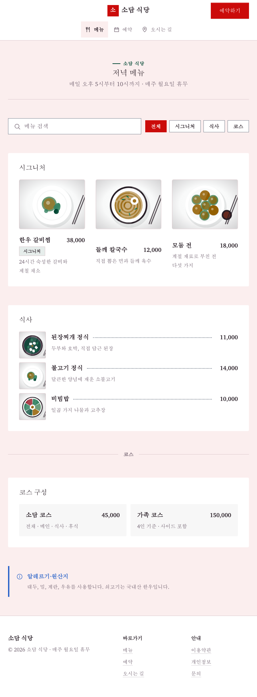
1440px · 문서 높이 2132→2132px · 프로브 지적 없음 → 없음 · PNG 바이트 동일 · 육안 비교 안 함
개선 · 1440px 폼 2열에서 반폭 필드 혼자 한 줄이 없어졌다(Q09 loneHalfRows 1→0). 이 폭 PNG는 before와 바이트가 달라졌고 육안 비교는 하지 않았다.
남은 문제·새로 본 것 · 이 표본의 나머지 3폭은 바이트 동일.
320px · 문서 높이 1859→1859px · 프로브 지적 없음 → 없음 · PNG 바이트 동일 · 육안 비교 안 함
before (2.3.0, 89573577f)
final (2.4.0, d72d78389)
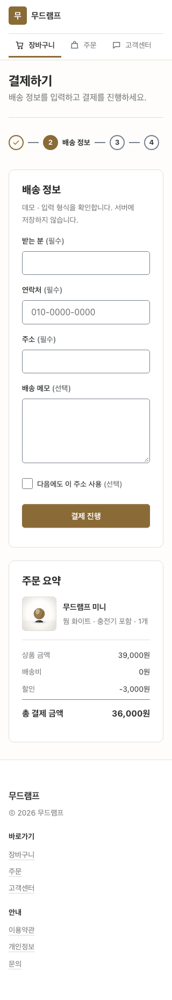
390px · 문서 높이 1859→1859px · 프로브 지적 없음 → 없음 · PNG 바이트 동일 · 육안 비교 안 함
before (2.3.0, 89573577f)
final (2.4.0, d72d78389)
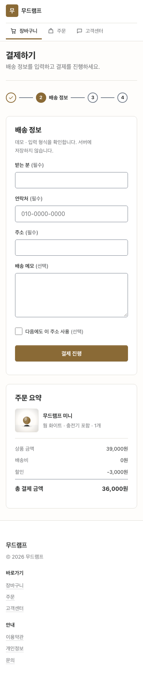
768px · 문서 높이 1292→1292px · 프로브 지적 없음 → 없음 · PNG 바이트 동일 · 육안 비교 안 함
before (2.3.0, 89573577f)
final (2.4.0, d72d78389)
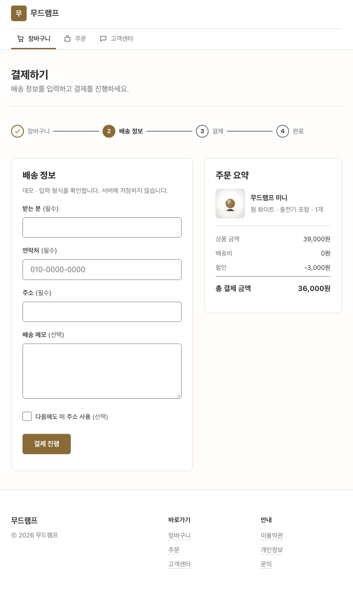
1440px · 문서 높이 1206→1206px · 프로브 지적 없음 → 없음 · PNG 달라짐 · 육안 비교 안 함
before (2.3.0, 89573577f)final (2.4.0, d72d78389)
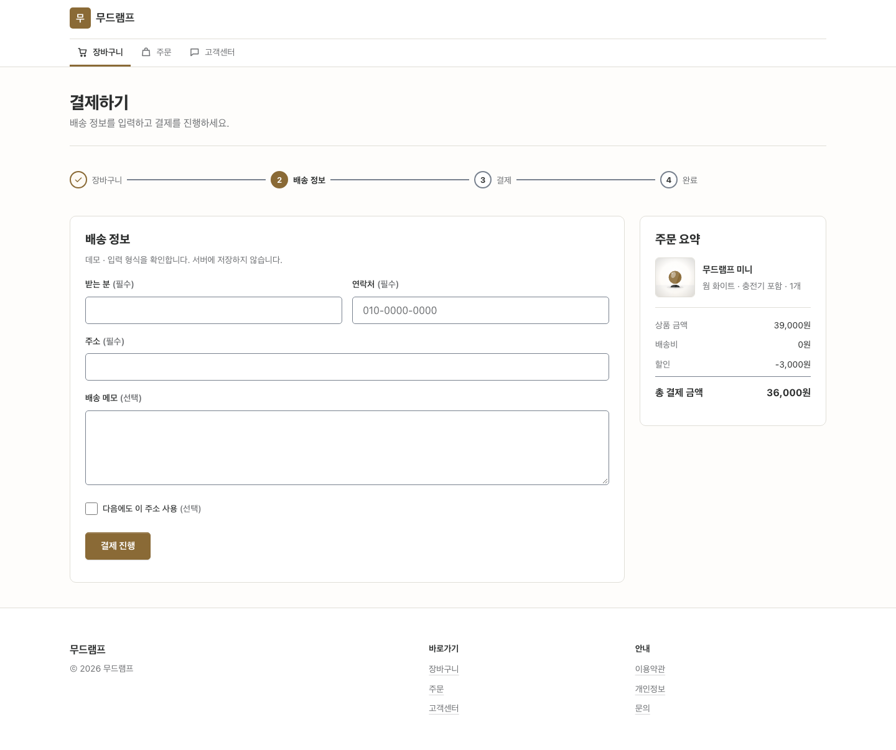
S29 · hr-people
분류: a-violation · 320~768px 카드 제목이 끝줄 2글자로 접힘(ORPHAN_LINE)
개선 · 제목 끝줄 고아(ORPHAN_LINE) 3개×3폭이 0(프로브). 육안 비교는 하지 않았다.
남은 문제·새로 본 것 · Recipe는 이 템플릿을 추천하지 않는다(RC05, 차트 가로 왜곡 2.13배 Q08).
320px · 문서 높이 2185→2185px · 프로브 지적 ORPHAN_LINE,ORPHAN_LINE,ORPHAN_LINE → 없음 · PNG 달라짐 · 육안 비교 안 함
before (2.3.0, 89573577f)
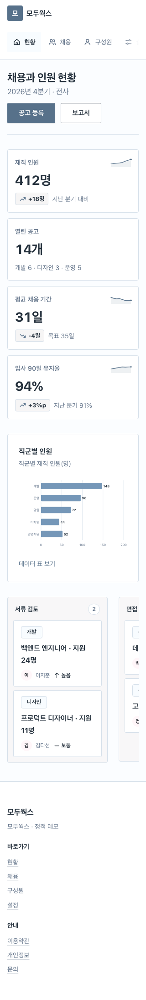
final (2.4.0, d72d78389)
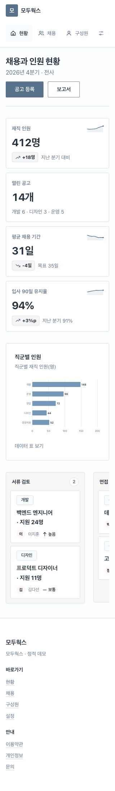
390px · 문서 높이 1987→1987px · 프로브 지적 ORPHAN_LINE,ORPHAN_LINE,ORPHAN_LINE → 없음 · PNG 달라짐 · 육안 비교 안 함
before (2.3.0, 89573577f)
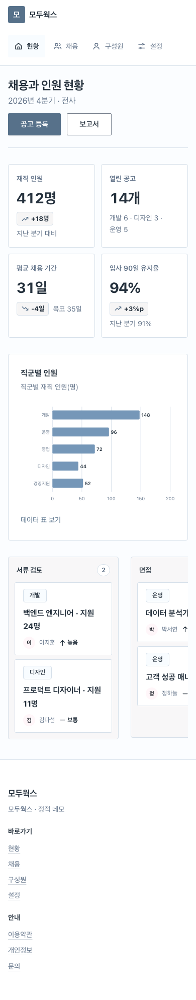
final (2.4.0, d72d78389)
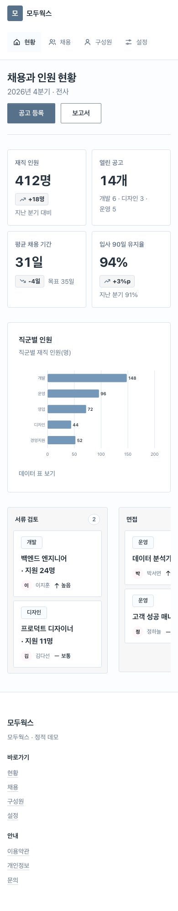
768px · 문서 높이 1691→1691px · 프로브 지적 ORPHAN_LINE,ORPHAN_LINE,ORPHAN_LINE → 없음 · PNG 달라짐 · 육안 비교 안 함
before (2.3.0, 89573577f)final (2.4.0, d72d78389)
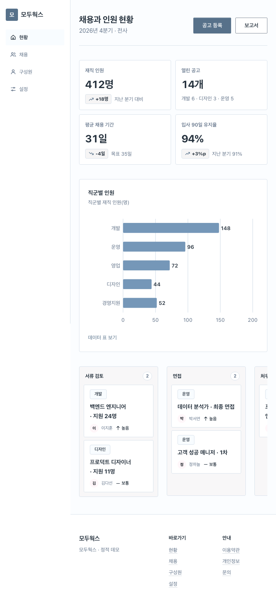
1440px · 문서 높이 1581→1581px · 프로브 지적 없음 → 없음 · PNG 바이트 동일 · 육안 비교 안 함
before (2.3.0, 89573577f)
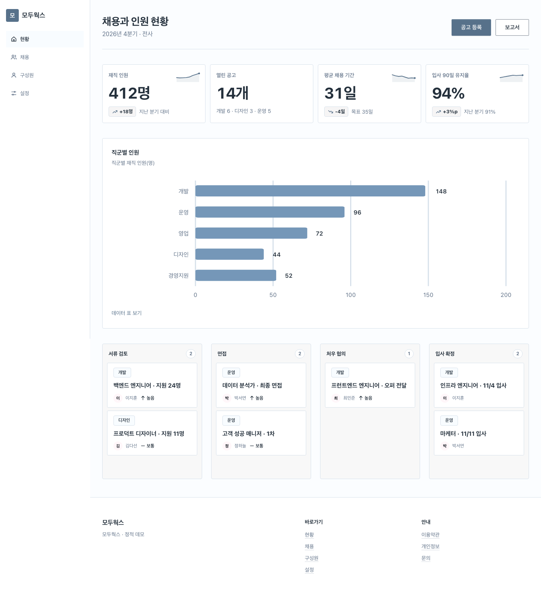
final (2.4.0, d72d78389)
S11 · dashboard-overview~columns:two
분류: variant-worse · KPI 4개를 2열로 바꾸면 핵심 지표가 아래로 밀리고 셀이 넓어짐
측정 조건(Q) · Q11@1440 실패 → 실패(추천 제외 V03)
개선 · 4폭 모두 before와 바이트 동일. 렌더는 바뀌지 않았다. 갤러리 기본 추천에서만 빠진다(V03, `recommended:false`).
남은 문제·새로 본 것 · KPI가 2행이 되는 렌더(Q11 실패)는 그대로 열 수 있다.
320px · 문서 높이 2211→2211px · 프로브 지적 없음 → 없음 · PNG 바이트 동일 · 육안 비교 안 함
before (2.3.0, 89573577f)
final (2.4.0, d72d78389)
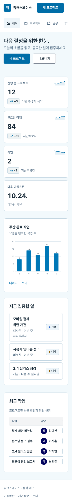
390px · 문서 높이 1901→1901px · 프로브 지적 없음 → 없음 · PNG 바이트 동일 · 육안 비교 안 함
before (2.3.0, 89573577f)
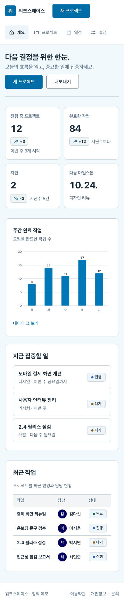
final (2.4.0, d72d78389)
768px · 문서 높이 1880→1880px · 프로브 지적 MEASURE_SHORT → MEASURE_SHORT · PNG 바이트 동일 · 육안 비교 안 함
before (2.3.0, 89573577f)
final (2.4.0, d72d78389)
1440px · 문서 높이 1558→1558px · 프로브 지적 없음 → 없음 · PNG 바이트 동일 · 육안 비교 안 함
before (2.3.0, 89573577f)final (2.4.0, d72d78389)
S30 · saas-landing~heads:center
분류: variant-worse · 섹션 머리말만 가운데로 바꾸면 본문은 왼쪽 정렬이라 정렬선이 둘이 됨
측정 조건(Q) · Q12@1440 실패 → 실패(추천 제외 V04)
개선 · 머리말만 가운데인 렌더(Q12 5/5 불일치)는 그대로. 갤러리 기본 추천에서만 빠진다(V04). 4폭 PNG는 S01의 벤토 변경 때문에 바이트가 달라졌다(육안 비교 안 함).
남은 문제·새로 본 것 · 렌더를 고치지 않았다.
320px · 문서 높이 6635→6635px · 프로브 지적 없음 → 없음 · PNG 달라짐 · 육안 비교 안 함
before (2.3.0, 89573577f)final (2.4.0, d72d78389)
390px · 문서 높이 6398→6398px · 프로브 지적 없음 → 없음 · PNG 달라짐 · 육안 비교 안 함
before (2.3.0, 89573577f)final (2.4.0, d72d78389)
768px · 문서 높이 5088→5043px · 프로브 지적 없음 → 없음 · PNG 달라짐 · 육안 비교 안 함
before (2.3.0, 89573577f)final (2.4.0, d72d78389)
1440px · 문서 높이 4901→4895px · 프로브 지적 없음 → 없음 · PNG 달라짐 · 육안 비교 안 함
before (2.3.0, 89573577f)final (2.4.0, d72d78389)
S02 · saas-landing~hero:statement
분류: variant-worse · 히어로를 큰 문장형으로 바꾸면 제품 목업이 사라지고 장식 원만 남음
측정 조건(Q) · Q14 실패 → 실패(추천 제외 V01)
개선 · 히어로 제품 목업이 사라지는 렌더(Q14 실패)는 그대로. 기본 추천에서만 빠진다(V01). PNG는 S01 벤토 변경만큼 달라졌다(육안 비교 안 함).
남은 문제·새로 본 것 · 렌더를 고치지 않았다.
320px · 문서 높이 6358→6358px · 프로브 지적 없음 → 없음 · PNG 달라짐 · 육안 비교 안 함
before (2.3.0, 89573577f)final (2.4.0, d72d78389)
390px · 문서 높이 6069→6069px · 프로브 지적 없음 → 없음 · PNG 달라짐 · 육안 비교 안 함
before (2.3.0, 89573577f)final (2.4.0, d72d78389)
768px · 문서 높이 5058→5013px · 프로브 지적 없음 → 없음 · PNG 달라짐 · 육안 비교 안 함
before (2.3.0, 89573577f)final (2.4.0, d72d78389)
1440px · 문서 높이 4786→4780px · 프로브 지적 MEASURE_SHORT,MEASURE_SHORT → MEASURE_SHORT,MEASURE_SHORT · PNG 달라짐 · 육안 비교 안 함
before (2.3.0, 89573577f)final (2.4.0, d72d78389)
S15 · dashboard-analytics
분류: awkward · 규칙은 통과하나 차트 카드 높이가 제각각이고 가로 막대가 넓은 폭에 늘어짐
측정 조건(Q) · Q08@1440 실패 → 실패
개선 · 4폭 중 320·768이 바이트 동일이 아니라 2폭만 동일. 차트 도메인·가로 늘림(Q08 1440 실패)은 그대로.
남은 문제·새로 본 것 · 이 단위에서 고치지 않았다(진단 C4).
320px · 문서 높이 2338→2338px · 프로브 지적 없음 → 없음 · PNG 바이트 동일 · 육안 비교 안 함
before (2.3.0, 89573577f)final (2.4.0, d72d78389)
390px · 문서 높이 2190→2190px · 프로브 지적 없음 → 없음 · PNG 바이트 동일 · 육안 비교 안 함
before (2.3.0, 89573577f)final (2.4.0, d72d78389)
768px · 문서 높이 1765→1765px · 프로브 지적 없음 → 없음 · PNG 달라짐 · 육안 비교 안 함
before (2.3.0, 89573577f)final (2.4.0, d72d78389)
1440px · 문서 높이 1670→1670px · 프로브 지적 없음 → 없음 · PNG 달라짐 · 육안 비교 안 함
before (2.3.0, 89573577f)final (2.4.0, d72d78389)
완성도 높음으로 분류한 표본 7개(회귀 확인)
폭 순서 320 / 390 / 768 / 1440. 바이트가 달라진 표본은 S01(벤토 변경), S18(푸터 버전 문구), S34(320px 제목 33→32px)다. 개별 판단은 보고서 4절.
키
조합
PNG
문서 높이 before→final
S01
saas-landing
달라짐 / 달라짐 / 달라짐 / 달라짐
6635→6635 / 6398→6398 / 5088→5043 / 4823→4817
S10
dashboard-overview
동일 / 동일 / 동일 / 동일
2211→2211 / 1901→1901 / 1880→1880 / 1390→1390
S14
finance-overview
동일 / 동일 / 동일 / 동일
2357→2357 / 2404→2404 / 1681→1681 / 1660→1660
S18
signup
달라짐 / 달라짐 / 달라짐 / 달라짐
1040→1040 / 1040→1040 / 1037→1037 / 1094→1094
S20
product-detail
동일 / 동일 / 동일 / 동일
2364→2364 / 2343→2343 / 1785→1785 / 1881→1881
S25
docs-reference
동일 / 동일 / 동일 / 동일
2958→2958 / 2916→2916 / 2801→2801 / 2707→2707
S34
article
달라짐 / 동일 / 동일 / 동일
2064→2060 / 1941→1941 / 1915→1915 / 2105→2105
S01 · saas-landing
분류: good · 완성도 높은 기준 화면: 히어로-신뢰-기능-단계-후기-요금-FAQ-CTA가 한 흐름
측정 조건(Q) · Q06@1440 통과 → 통과 · Q07@1440 실패 → 통과 · Q12@1440 통과 → 통과 · Q13@1440 실패 → 통과 · Q13@390 실패 → 통과 · Q14 통과 → 통과 · Q15 통과 → 통과 · Q16@1440 실패 → 실패
개선 · 390px: 히어로 목업과 같은 대시보드가 벤토에 또 나오던 중복이 없어졌다(Q13 통과). 1440px: 벤토 지표·진행률이 한 줄, 카드·인용이 한 줄로 묶였다(Q07 0.63→0.52).
남은 문제·새로 본 것 · 완성도 높음으로 분류했던 표본이 바이트가 달라졌다. 1440px에서 벤토 첫 칸이 구체적인 제품 화면 대신 글자 없는 범용 흐름도(1016×881px, 약 585px 높이)로 바뀌어 크고 성기다. 중복은 없앴지만 이 칸이 제품을 설명하는 힘은 약해졌다고 본다(내 육안 판단, 사람 레이블 아님). 악화로 볼지는 확인 필요.
320px · 문서 높이 6635→6635px · 프로브 지적 없음 → 없음 · PNG 달라짐 · 육안 비교 안 함
before (2.3.0, 89573577f)final (2.4.0, d72d78389)
390px · 문서 높이 6398→6398px · 프로브 지적 없음 → 없음 · PNG 달라짐 · 직접 봄
before (2.3.0, 89573577f)final (2.4.0, d72d78389)
768px · 문서 높이 5088→5043px · 프로브 지적 없음 → 없음 · PNG 달라짐 · 육안 비교 안 함
before (2.3.0, 89573577f)final (2.4.0, d72d78389)
1440px · 문서 높이 4823→4817px · 프로브 지적 MEASURE_SHORT,MEASURE_SHORT → MEASURE_SHORT,MEASURE_SHORT · PNG 달라짐 · 직접 봄
before (2.3.0, 89573577f)final (2.4.0, d72d78389)
S10 · dashboard-overview
분류: good · 완성도 높은 기준 대시보드: KPI-차트-표 위계
측정 조건(Q) · Q11@1440 통과 → 통과 · Q16@1440 실패 → 실패
320px · 문서 높이 2211→2211px · 프로브 지적 없음 → 없음 · PNG 바이트 동일 · 육안 비교 안 함
before (2.3.0, 89573577f)
final (2.4.0, d72d78389)
390px · 문서 높이 1901→1901px · 프로브 지적 없음 → 없음 · PNG 바이트 동일 · 육안 비교 안 함
before (2.3.0, 89573577f)
final (2.4.0, d72d78389)
768px · 문서 높이 1880→1880px · 프로브 지적 MEASURE_SHORT → MEASURE_SHORT · PNG 바이트 동일 · 육안 비교 안 함
before (2.3.0, 89573577f)
final (2.4.0, d72d78389)
1440px · 문서 높이 1390→1390px · 프로브 지적 없음 → 없음 · PNG 바이트 동일 · 육안 비교 안 함
before (2.3.0, 89573577f)final (2.4.0, d72d78389)
S14 · finance-overview
분류: good · 수치·추이·거래 표가 위계대로 놓인 데이터 화면
320px · 문서 높이 2357→2357px · 프로브 지적 없음 → 없음 · PNG 바이트 동일 · 육안 비교 안 함
before (2.3.0, 89573577f)
final (2.4.0, d72d78389)
390px · 문서 높이 2404→2404px · 프로브 지적 없음 → 없음 · PNG 바이트 동일 · 육안 비교 안 함
before (2.3.0, 89573577f)
final (2.4.0, d72d78389)
768px · 문서 높이 1681→1681px · 프로브 지적 없음 → 없음 · PNG 바이트 동일 · 육안 비교 안 함
before (2.3.0, 89573577f)final (2.4.0, d72d78389)
1440px · 문서 높이 1660→1660px · 프로브 지적 없음 → 없음 · PNG 바이트 동일 · 육안 비교 안 함
before (2.3.0, 89573577f)final (2.4.0, d72d78389)
S18 · signup
분류: good · 인증 폼: 한 가지 입력에 집중한 기준 화면
320px · 문서 높이 1040→1040px · 프로브 지적 없음 → 없음 · PNG 달라짐 · 육안 비교 안 함
before (2.3.0, 89573577f)final (2.4.0, d72d78389)
390px · 문서 높이 1040→1040px · 프로브 지적 없음 → 없음 · PNG 달라짐 · 육안 비교 안 함
before (2.3.0, 89573577f)final (2.4.0, d72d78389)
768px · 문서 높이 1037→1037px · 프로브 지적 없음 → 없음 · PNG 달라짐 · 육안 비교 안 함
before (2.3.0, 89573577f)final (2.4.0, d72d78389)
1440px · 문서 높이 1094→1094px · 프로브 지적 없음 → 없음 · PNG 달라짐 · 육안 비교 안 함
before (2.3.0, 89573577f)final (2.4.0, d72d78389)
S20 · product-detail
분류: good · 갤러리-구매 박스-탭 위계가 분명한 상품 상세
측정 조건(Q) · Q17@320 통과 → 통과
320px · 문서 높이 2364→2364px · 프로브 지적 없음 → 없음 · PNG 바이트 동일 · 육안 비교 안 함
before (2.3.0, 89573577f)
final (2.4.0, d72d78389)
390px · 문서 높이 2343→2343px · 프로브 지적 없음 → 없음 · PNG 바이트 동일 · 육안 비교 안 함
before (2.3.0, 89573577f)final (2.4.0, d72d78389)
768px · 문서 높이 1785→1785px · 프로브 지적 없음 → 없음 · PNG 바이트 동일 · 육안 비교 안 함
before (2.3.0, 89573577f)final (2.4.0, d72d78389)
1440px · 문서 높이 1881→1881px · 프로브 지적 없음 → 없음 · PNG 바이트 동일 · 육안 비교 안 함
before (2.3.0, 89573577f)final (2.4.0, d72d78389)
S25 · docs-reference
분류: good · 목차·본문·코드가 이어지는 문서 기준 화면
320px · 문서 높이 2958→2958px · 프로브 지적 없음 → 없음 · PNG 바이트 동일 · 육안 비교 안 함
before (2.3.0, 89573577f)final (2.4.0, d72d78389)
390px · 문서 높이 2916→2916px · 프로브 지적 없음 → 없음 · PNG 바이트 동일 · 육안 비교 안 함
before (2.3.0, 89573577f)
final (2.4.0, d72d78389)
768px · 문서 높이 2801→2801px · 프로브 지적 없음 → 없음 · PNG 바이트 동일 · 육안 비교 안 함
before (2.3.0, 89573577f)
final (2.4.0, d72d78389)
1440px · 문서 높이 2707→2707px · 프로브 지적 없음 → 없음 · PNG 바이트 동일 · 육안 비교 안 함
before (2.3.0, 89573577f)final (2.4.0, d72d78389)
S34 · article
분류: good · 글 페이지 기준 표본: 제목·본문·인용·체크리스트가 한 정렬선
측정 조건(Q) · Q12@1440 통과 → 통과
320px · 문서 높이 2064→2060px · 프로브 지적 없음 → 없음 · PNG 달라짐 · 육안 비교 안 함
before (2.3.0, 89573577f)final (2.4.0, d72d78389)
390px · 문서 높이 1941→1941px · 프로브 지적 없음 → 없음 · PNG 바이트 동일 · 육안 비교 안 함
before (2.3.0, 89573577f)final (2.4.0, d72d78389)
768px · 문서 높이 1915→1915px · 프로브 지적 없음 → 없음 · PNG 바이트 동일 · 육안 비교 안 함
before (2.3.0, 89573577f)final (2.4.0, d72d78389)
1440px · 문서 높이 2105→2105px · 프로브 지적 없음 → 없음 · PNG 바이트 동일 · 육안 비교 안 함